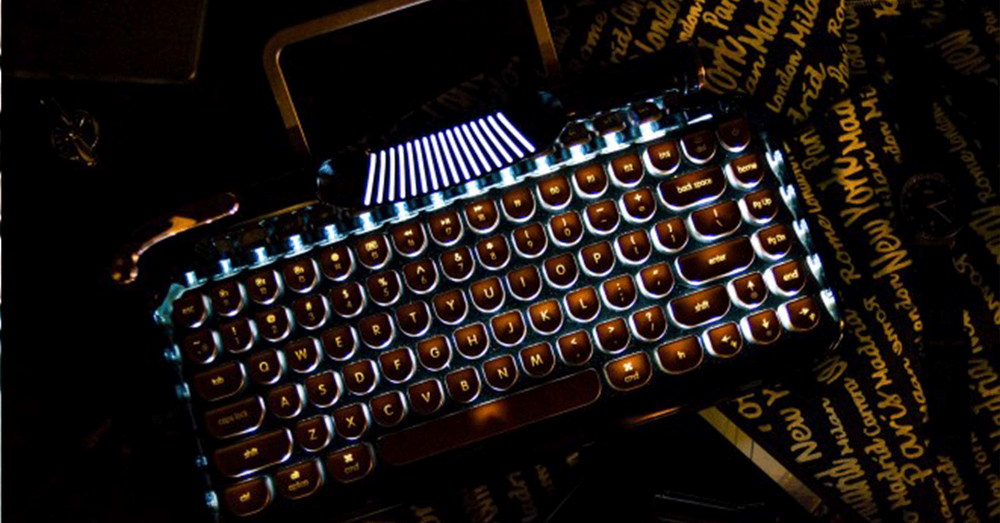

Clavier sans fil Rymek
Spécifications et détails :
- Clavier mécanique sans fil pour un style vintage !
- Touches interchangeables
- Bluetooth 3.0
- Compatible iOS, Android, Mac and Windows.
- Batterie lithium 2,000mAh pouvant offrir une autonomie de près de 50 heures.
- Lancé au prix de 100 euros